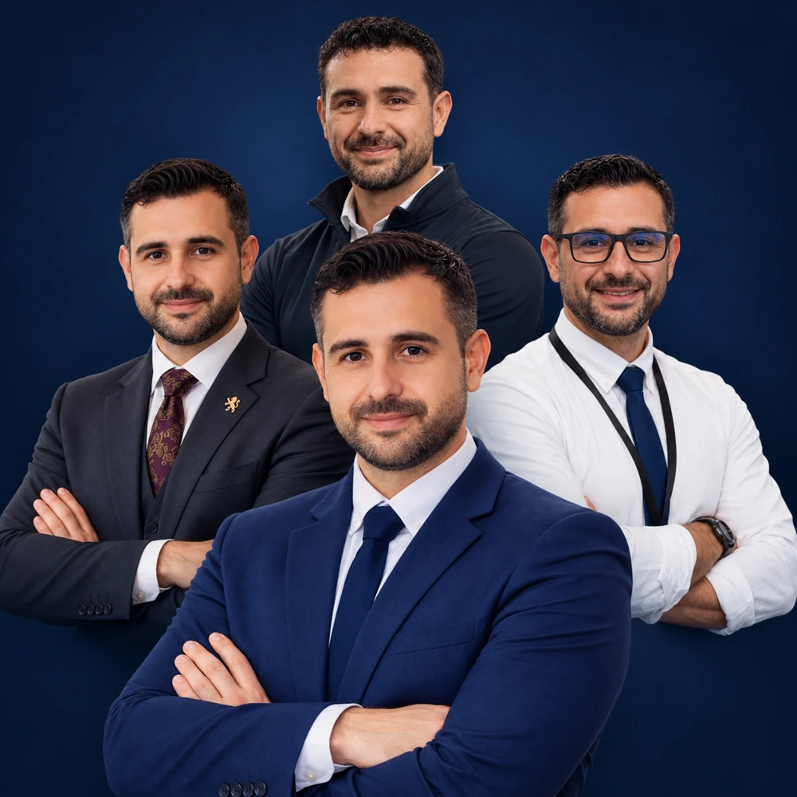
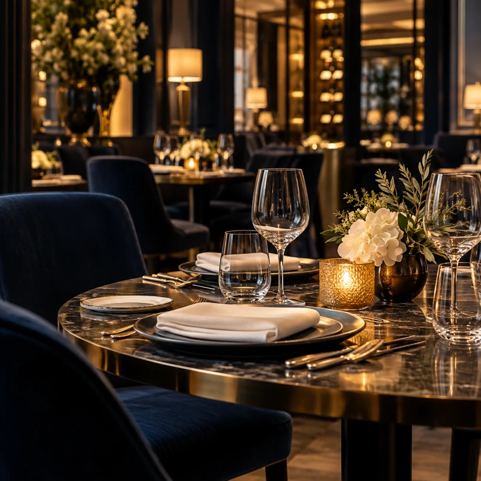
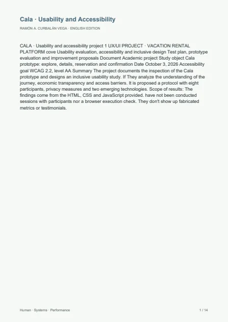
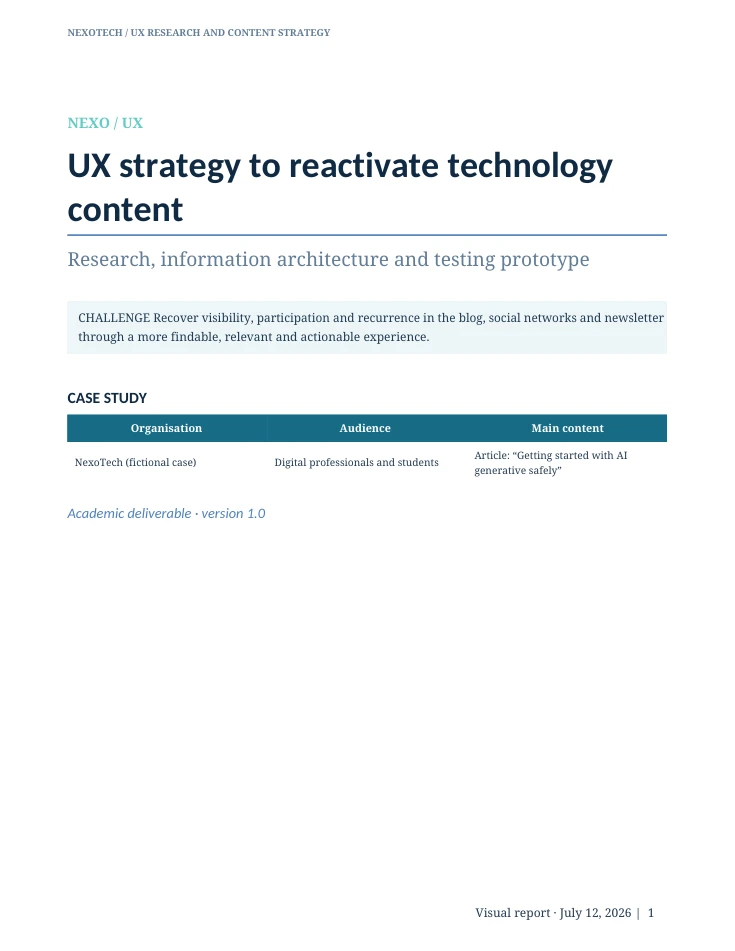
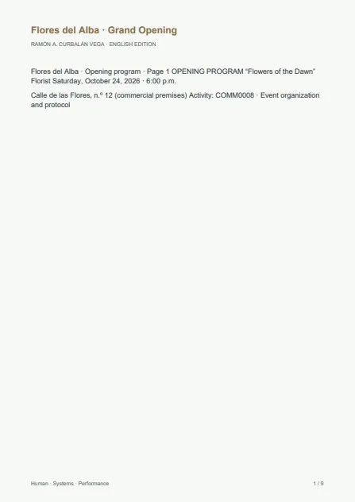
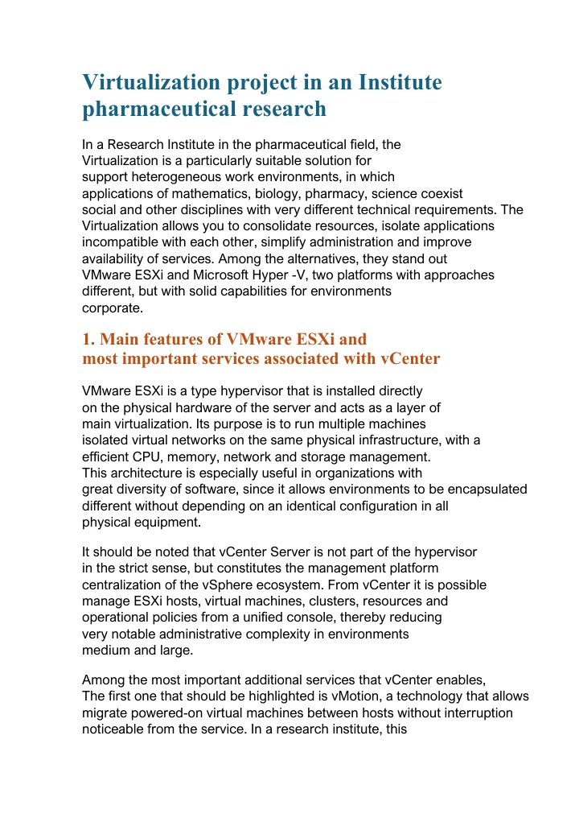
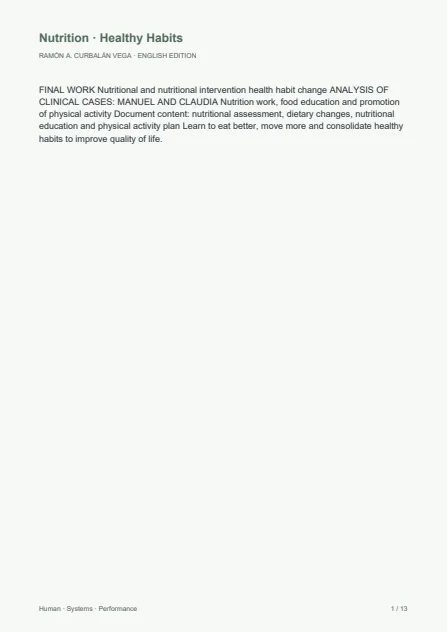

Leadership and service
Planning, interdepartmental coordination, customer experience, 5★/5★ GL standards, resources, costs and execution.
I bring operations management, technology and human performance together through a shared approach: analyse, plan, execute, measure and improve. The customer experience, system reliability and team performance all contribute to the same outcome.

5★/5★ GL hospitality, systems, digital projects, training, nutrition and continuous improvement connected in a single professional vision.
My professional profile brings leadership, systems and performance together. They share a common discipline: understand the context, organise resources and turn complexity into measurable results.


“I design people, processes and technology to work together as one system.”RAMÓN A. CURBALÁN VEGA · HUMAN · SYSTEMS · PERFORMANCE
Planning, interdepartmental coordination, customer experience, 5★/5★ GL standards, resources, costs and execution.
Development, networks, security, AI and automation aimed at solving real problems and reducing operational friction.
Training, nutrition, habits and monitoring with a comprehensive, practical and progressive vision.
Each area has its own identity and shares a common methodology, high standards and focus on results.
More than two decades in operations and leadership, combined with technical training, project management and human performance.
Consolidated track record in hospitality, restaurants, banquets, events and customer service.
Experience in 5★ and 5★ Grand Luxury hotels with focus on standards, detail and execution.
BEO, staffing, logistics, inventory, quality, KPI, coordination and minute-by-minute management.
Management, technology, projects, sports training, nutrition and continuous improvement.
A methodology that is simple to explain and demanding to apply. The goal is not to add complexity, but to reduce it.
Understand objective, context, restrictions, risks and real needs.
Organize resources, responsible parties, dependencies, times and success criteria.
Coordinate, communicate and act without losing quality or ability to adapt.
Observe indicators, experience, incidents, load and deviations.
Eliminate friction, standardize what works and prepare for the next cycle.
Three areas connected around the same management logic: people, processes and systems that work in the same direction.
My own projects bring operations, design, technology and delivery together.
Private platform for training, nutrition, clients and habits.
OPEN PROJECT →Hybrid physical-digital center with automation and intelligent dispensing.
OPEN PROJECT →Signature catering proposal for estates, villas, boutique weddings and corporate events in Mallorca.
OPEN PROJECT →Operational support tool for inventories, material and event control.
OPEN PROJECT →Academic projects and technical studies that document my way of researching, planning and designing solutions.

Evaluation of a vacation rental platform: understanding the journey, price transparency and barriers to entry.
Academic project prototype inspection
SEE CASE STUDY ↗
A proposal to improve findability, meaningful interaction and return visits across a technology content ecosystem.
Academic case · fictitious organization
SEE CASE STUDY ↗Sensory launch of a perfume that connects an in-person gala, interactive streaming and boxes sent to the online public.
Academic proposal · fictitious brand
SEE CASE STUDY ↗
Comprehensive commercial opening plan with reception, protocol, cocktail, activities and business monitoring.
Academic activity · proposed program
SEE CASE STUDY ↗
Analysis of VMware ESXi and Hyper-V for scientific applications, Windows/Linux environments and service continuity.
Technical study · analysis of alternatives
SEE CASE STUDY ↗
Analysis of two cases with nutritional assessment, dietary proposals, nutritional education and a progressive physical activity plan.
Academic work case analysis
SEE CASE STUDY ↗Hospitality · Technology · Human performance · Own projects.
Let's talk →